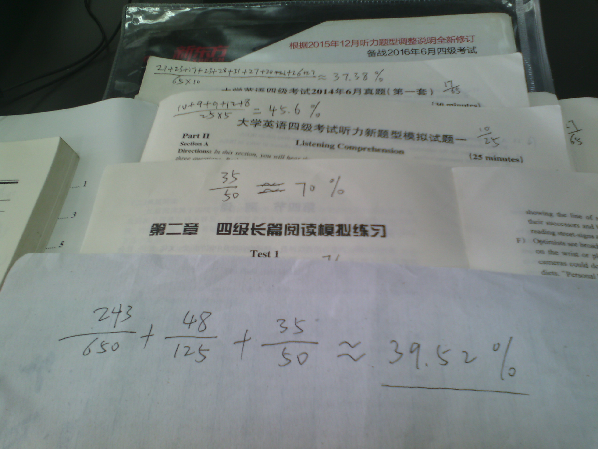
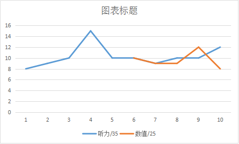
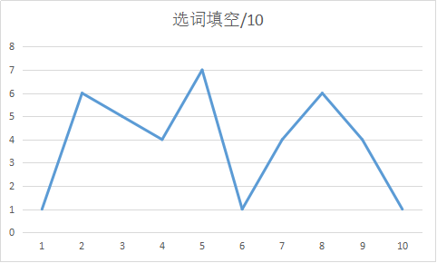
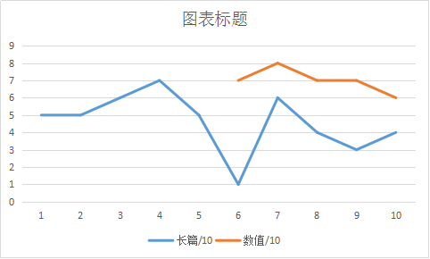
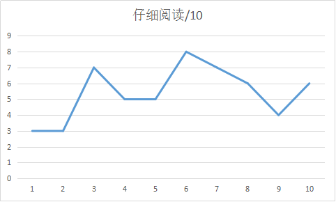
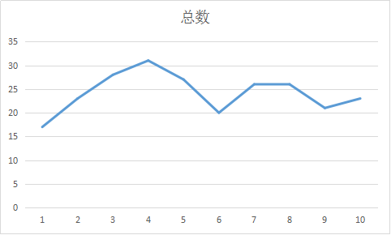

春宵苦短日高起，不来
标题来自知乎。
这个东西，折磨了我几个月。

刷完，大概粗略算了一下正确率：

拍照环境不好，也没必要对图片做什么高大上的处理。这种黑乎乎的照片，放在洁白的网页上真的真的会影响美观，但真的真的就不处理了，也可能我不会。图片就是事实，而已。
图片不清楚，并不影响看到图片上写着的大大的最终结果：39.52%
图片本身不小，有1M。确实像素低可能看不清。上面的所有数字都表示选择题的个数，除了旧型听力最后一题的十个听力填空。分母表示总数，分子表示正确的数量。总之，按照平均数的算法，正确率就是，残酷的39.52%。
其实用平均数来表示正确率是有问题的，万一一不小心就有了那么一点点的进步呢？事实证明我想多了。
数据分析的话，拍照来的总归感觉不是很好，于是，就真的无聊地统计了一下，一共有三部分，第一部分是十套真题，除掉写作和翻译的，第二部分是长篇阅读专项，第三部分是新型听力专项。
这个是十套真题的统计：
| 四级套题/10 | |||||
| 听力/35 | 选词填空/10 | 长篇阅读/10 | 仔细阅读/10 | 总数 | |
| 1 | 8 | 1 | 5 | 3 | 17 |
| 2 | 9 | 6 | 5 | 3 | 23 |
| 3 | 10 | 5 | 6 | 7 | 28 |
| 4 | 15 | 4 | 7 | 5 | 31 |
| 5 | 10 | 7 | 5 | 5 | 27 |
| 6 | 10 | 1 | 1 | 8 | 20 |
| 7 | 9 | 4 | 6 | 7 | 26 |
| 8 | 10 | 6 | 4 | 6 | 26 |
| 9 | 10 | 4 | 3 | 4 | 21 |
| 10 | 12 | 1 | 4 | 6 | 23 |
这个是长篇阅读专项的统计：
| 长篇阅读专项 | |||||
| 1 | 2 | 3 | 4 | 5 | |
| 数值/10 | 7 | 8 | 7 | 7 | 6 |
这个是新型听力的专项：
| 新型听力专项 | |||||
| 1 | 2 | 3 | 4 | 5 | |
| 数值/25 | 10 | 9 | 9 | 12 | 8 |
只看表格好像没什么感觉，那就把它变成折线图。两个专项是在四级考前的后半段时间做的，时间上和套题的后半段比较接近。

先是听力。默认没有图表标题，因为有两条线，就懒得手动改了。新型听力比旧型听力少十道题，所以可以看到，有没有那十道题正确的总量是差不多的，说明那十道题本来就几乎对不了几个啊。

然后是选词填空，就是十五选十，波动比较大，应该是看懂了就对得多，看不懂就对的少。所以这个图表没有任何价值。

这个也没有图表标题，这个是长篇阅读。可以看到，专项的正确率远超套题的，然而做它们的时间差不多，说明，我没认真做啊。专项用的时间比较多一点。还有可能专项的题简单一点，毕竟不是真题。

仔细阅读，精读，总体来说还是稍微有那么一点点进步的看样子。

最后这个是正确量的总数。整体来看，最后一次做的和第一次做的没什么差别。没有有体现出上升或者下降。也就是说，这两个半月来，我只是简单地做到了没有退步……
至于四级考试。
对啊，今天刚考的，上午9点。考前心情异常沉重。估计有生以来还没有哪次考试是明知道自己不会过但还必须得认真复习认真考试的。
然后就炸了。
按39.52%的正确率来算，710 * 0.3952 = 280.592.
严肃地说，根据我多年考试的经验以及对我自己的了解，按照最好的情况来算，710的总分，我会考差不多400分。详情如下：
短文写作 106.5 * 0.5 = 53.25
听力 248.5 * 0.5 = 124.25
选词填空 35.5 * 0.8 = 28.4
长篇阅读 71 * 0.6 = 42.6
仔细阅读 142 * 0.7 = 99.4
翻译 106.5 * 0.5 = 53.25
53.25 + 124.25 + 28.4 + 42.6 + 99.4 + 53.25 = 401.15
401.15，差不多400。但是，这估计已经是最最好的情况下的数字。当然，425才会pass，差一大截。
计算的时候的比例都要超过平时练习时候真确率的比例，一方面因为考试会比较认真，另一方面。
实在不能接受不到300分的英语四级成绩啊。
嗯，过的希望是很渺茫的。
嗯。
一个月以后，看我估计的对不对。
然后对四级想说的也真的不只是这些啊。
<<<(2016.2.21)
cet4成绩明天出，等待一个会令人失望但仍然抱有一丝丝点侥幸希望的心情，还是不要不要的~
(2016.2.21);
<<<(2016.2.22)
估的，高了……
(2016.2.22);